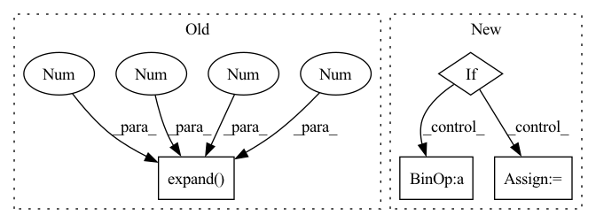

Pattern ID :3566
Before Change
shape = x.shape
n, c, h, w = shape
if c == 1:
x = x.expand(1 , 3 , 1 , 1 )
hPad = max(0, 32 - h)
wPad = max(0, 32 - w)
x = F.pad(x, (0, wPad, 0, hPad))
return self._quantizer(self._encoder(x)), torch.tensor([h, w], dtype=torch.int)After Change
for i in range(self._levels):
head = self._heads[i]
z = head(latent)
if i < self._levels - 1:
mapper = self._mappers[i]
latent = mapper(latent)
code = self._quantizers[i](z)
hard = self._deQuantizers[i](code)
latent = latent - hard
else:
code = self._quantizers[i](z)
codes.append(code)In pattern: SUPERPATTERN
Frequency: 3
Non-data size: 4
Instances Fragment ID: 17654156
Project Name: xiaosu-zhu/mcquic
Commit Name: 3ca26f40dc8d00ed5fbebee4a77654f9d1d51939
Time: 2021-10-08
Author: xiaosu.zhu@outlook.com
File Name: src/mcqc/evaluation/refModel.py
M Class Name: RefEncoder
N Class Name: RefEncoder
M Method Name: forward(2)
N Method Name: forward(2)
M Parent Class: nn.Module
N Parent Class: nn.Module
M File Name: src/mcqc/evaluation/refModel.py
N File Name: src/mcqc/evaluation/refModel.py
M Start Line: 106
M End Line: 114
N Start Line: 136
N End Line: 150
Before Change
x = x.unsqueeze(-1)
x = self.project_to_steps(x) // BxCxTxS
x = self.dropout(x)
x = x.unsqueeze(0).expand( targets.size(0), -1 , -1 , -1 , -1 )
copies, bsz, dim, tsz, steps = x.shape
steps = min(steps, tsz - self.offset)
predictions = x.new(bsz * copies * (tsz - self.offset + 1) * steps - ((steps + 1) * steps // 2) * copies * bsz)After Change
)
start = end = 0
for i in range(steps):
offset = i + self.offset
end = start + (tsz - offset) * bsz * copies
if self.infonce:
predictions[start:end] = torch.einsum(
"bct,nbct->tbn", x[..., :-offset, i], targets[..., offset:]
).flatten()
else:
pos_num = (end - start) // copies
predictions[start:end] = torch.einsum(
"bct,nbct->nbt", x[..., :-offset , i], targets[..., offset:]
).flatten()
labels[start : start + pos_num] = 1.0
if weights is not None: Fragment ID: 17654152
Project Name: mohammadkhalifa/fairseq-tagging
Commit Name: 3335de5f441ee1b3824e16dcd98db620e40beaba
Time: 2020-02-29
Author: alexei.b@gmail.com
File Name: fairseq/models/wav2vec.py
M Class Name: Wav2VecPredictionsModel
N Class Name: Wav2VecPredictionsModel
M Method Name: forward(3)
N Method Name: forward(3)
M Parent Class: nn.Module
N Parent Class: nn.Module
M File Name: fairseq/models/wav2vec.py
N File Name: fairseq/models/wav2vec.py
M Start Line: 411
M End Line: 439
N Start Line: 638
N End Line: 691
Before Change
shape = x.shape
n, c, h, w = shape
if c == 1:
x = x.expand(1 , 3 , 1 , 1 )
hPad = max(0, 32 - h)
wPad = max(0, 32 - w)
x = F.pad(x, (0, wPad, 0, hPad))
return self._quantizer(self._encoder(x)), torch.tensor([h, w], dtype=torch.int)After Change
def forward(self, x: torch.Tensor) -> List[torch.LongTensor]:
codes = list()
latent = self._encoder(x)
for i in range(self._levels):
head = self._heads[i]
z = head(latent)
if i < self._levels - 1:
mapper = self._mappers[i]
latent = mapper(latent)
code = self._quantizers[i](z)
hard = self._deQuantizers[i](code)
latent = latent - hard
else:
code = self._quantizers[i](z)
codes.append(code)
return codes
Fragment ID: 17654155
Project Name: xiaosu-zhu/mcquic
Commit Name: 3ca26f40dc8d00ed5fbebee4a77654f9d1d51939
Time: 2021-10-08
Author: xiaosu.zhu@outlook.com
File Name: src/mcqc/evaluation/refModel.py
M Class Name: RefEncoder
N Class Name: RefEncoder
M Method Name: forward(2)
N Method Name: forward(2)
M Parent Class: nn.Module
N Parent Class: nn.Module
M File Name: src/mcqc/evaluation/refModel.py
N File Name: src/mcqc/evaluation/refModel.py
M Start Line: 106
M End Line: 114
N Start Line: 136
N End Line: 150